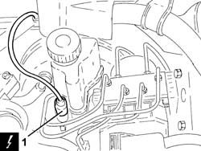
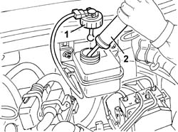
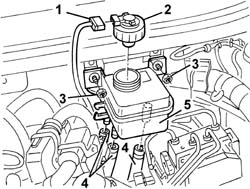
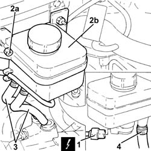
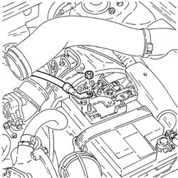
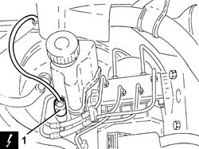
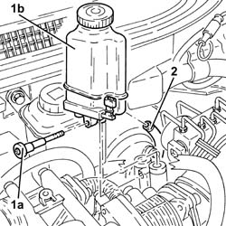

3330C30 brake fluid reservoir - r + r and wash inside
- Path
- Procedures > 33 BRAKING SYSTEM > 3330 HYDRAULIC BRAKING SYSTEM > 3330C brake pump, reservoir and load proportioning valve > 3330C30 brake fluid reservoir - r + r and wash inside
- Kind
- repair procedure (removal / refitting; the operation number is the code)
- Applies to
- all engines; all production periods
- Interactive page
- https://sloeber94.github.io/elrnDB-a147/en/#/3025231
Applies to: engines: 1.6 TS, 2.0 TS; all production periods
 Removing
Removing
 Refitting
RefittingPosition the vehicle on the ramp.
Proceed with removal 4450B10 Front WHEEL (one) - R.R. .
Remove the protective cap on the brake caliper bleed valve.
Connect the collection system (pipe and reservoir) to the bleed valve on the brake caliper.
Operate the brake pedal until the brake-clutch fluid reservoir is empty.
1. Disconnect the electrical connection from the air flow meter.
 | Name | Connector |
|---|---|---|
1 | Air flow meter |
2. Disconnect the oil vapour recovery pipe from the air intake hose.
3. Slacken the bands (3a) and remove the duct from the filter to the throttle body with integrated D.V.L. (3b) complete with air flow meter (3c).

Applies to: engines: 1.6 TS, 2.0 TS; all production periods
1. Disconnect the electrical connection from the low brake-clutch fluid warning light switch.
| Name | Connector |
|---|---|---|
1 | Brake fluid level sensor (switch) |

Applies to: engines: 1.6 TS, 2.0 TS; all production periods
Proceed with removal 3340B52 pump/central obs pipe - r r (Both).
1. Undo the bolt (1a) and raise the brake fluid reservoir (1b) as much as necessary, releasing it from the master cylinder.
2. Disconnect the flexible pipe from the reservoir to the clutch master cylinder, reservoir side.
Remove the brake fluid reservoir.

Applies to: engines: 1.6 TS, 2.0 TS; all production periods
Refitting
RemovingWash the inside of the brake fluid reservoir.
Connect the flexible pipe from the reservoir to the clurch master cylinder, reservoir side.
Refit the brake fluid reservoir in its seating, connecting it to the master cylinder, then fix it with the bolt.
Proceed with refitting 3340B52 pump/central obs pipe - r r (Both).
Connect the electrical connection from the low brake-clutch fluid warning light switch.
Refit in its seating the duct from the throttle body with integrated D.V.L. complete with air flow meter and secure it with the bands.
Connect the oil vapour recirculation pipe to the air intake sleeve.
Connect the electrical connection to the air flow meter.
Bleed the air from the hydraulic braking system 3330A14 HYDRAULIC BRAKING SYSTEM - Bleed air .
Proceed with refitting 4450B10 Front WHEEL (one) - R.R. .
Remove the car from the ramps.
Applies to: engines: 1.6 TS, 2.0 TS; all production periods; only with equipment: Guida a destra
Removing
RefittingOpen the bonnet lid.
1. Undo the brake fluid reservoir cap.
2. Draw off the brake fluid using a suitable syringe.

Applies to: engines: 1.6 TS, 2.0 TS; all production periods; only with equipment: Guida a destra
1. Disconnect the electrical connection from the brake fluid level sensor.
| Name | Connector |
|---|---|---|
1 | Brake fluid level sensor (switch) |
2. Tighten the reservoir cap.
3. Undo the brake fluid reservoir bolts.
4. Move the brake fluid reservoirslightly and disconnect the pipes.
5. Recover the brake fluid reservoir.

Applies to: engines: 1.6 TS, 2.0 TS; all production periods; only with equipment: Guida a destra
Refitting
RemovingWash the inside of the brake fluid reservoir.
Refit the brake fluid reservoirand connect the relevant pipes.
Secure the brake fluid reservoir to the engine bulkhead using the bolts.
 | Fastening | Component | Ø | Value (daNm) |
|---|---|---|---|---|
- | Bolt | BRAKE FLUID RESERVOIR | M6 | 0.80 |
Connect the electrical connection to the brake fluid level sensor.
Applies to: engines: 3.2 V6; all production periods
Removing
RefittingPosition the vehicle on the ramp.
Ensure that the ignition key is in the OFF position, then disconnect the negative battery terminal (-).
| Name | Connector |
|---|---|---|
- | Battery |
Proceed with removal 4450B02 left front wheel r r .
Remove the protective cap on the brake caliper bleed valve.
Connect the collection system (pipe and reservoir) to the bleed valve on the brake caliper.
Operate the brake pedal until the brake-clutch fluid reservoir is empty.
1. Disconnect the electrical connection from the low brake-clutch fluid warning light switch.
| Name | Connector |
|---|---|---|
1 | Brake fluid level sensor (switch) |
2. Undo the nuts (2a) and lift up the brake fluid reservoir (2b), as necessary.
3. Disconnect the pipes between the brake fluid reservoir and the master cylinder, reservoir side.
4. Disconnect the flexible pipe from the reservoir to the clutch master cylinder, reservoir side.
Remove the brake fluid reservoir.

Applies to: engines: 3.2 V6; all production periods
Refitting
RemovingWash the inside of the brake fluid reservoir.
Connect the flexible pipe from the reservoir to the clurch master cylinder, reservoir side.
Connect the pipes between the brake fluid reservoir and the master cylinder, reservoir side.
Place the brake fluid reservoir back in its housing and secure it using the nuts.
Connect the electrical connection from the low brake-clutch fluid warning light switch.
Top up the brake-clutch fluid level 0010T64 brake and or clutch fluid check level and top up as necessary .
Bleed the air from the hydraulic braking system 3330A14 HYDRAULIC BRAKING SYSTEM - Bleed air .
Proceed with refitting 4450B02 left front wheel r r .
Connect the negative (-) battery terminal.
Remove the car from the ramps.
Applies to: engines: 1.9 JTD 8V, 1.9 JTD 16V; all production periods
Removing
RefittingProceed with removal 5530B10 battery - r+r .

Applies to: engines: 1.9 JTD 8V, 1.9 JTD 16V; all production periods
Remove the brake/clutch fluid reservoir cap and drain the fluid using a suitable syringe, then retighten the cap.
1. Disconnect the electrical connection from the low brake-clutch fluid warning light switch.
| Name | Connector |
|---|---|---|
1 | Brake fluid level sensor (switch) |

Applies to: engines: 1.9 JTD 8V, 1.9 JTD 16V; all production periods
1. Undo the bolt (1a) and raise the brake fluid reservoir (1b) as much as necessary, releasing it from the master cylinder.
2. Disconnect the flexible pipe from the reservoir to the clutch master cylinder, reservoir side.
Remove the brake fluid reservoir.

Applies to: engines: 1.9 JTD 8V, 1.9 JTD 16V; all production periods
Refitting
RemovingWash the inside of the brake fluid reservoir.
Connect the flexible pipe from the reservoir to the clurch master cylinder, reservoir side.
Refit the brake fluid reservoir in its seating, connecting it to the master cylinder, then fix it with the bolt.
Connect the electrical connection from the low brake-clutch fluid warning light switch.
Bleed the air from the hydraulic braking system 0010T65 hydraulic brake system bleed air .
Proceed with refitting 5530B10 battery - r+r .
Topics linked from this page (10)
- 0010T64 brake and or clutch fluid check level and top up as necessary
- 0010T65 hydraulic brake system bleed air
- 3330A14 HYDRAULIC BRAKING SYSTEM - Bleed air
- 3340B52 pump/central obs pipe - r r
- 4450B02 left front wheel r r
- 4450B10 Front WHEEL (one) - R.R.
- 5530B10 battery - r+r
- A1B Battery ( Connectors )
- K25 Brake fluid level sensor (switch)
- K41 Air flow meter ( ENGINE )